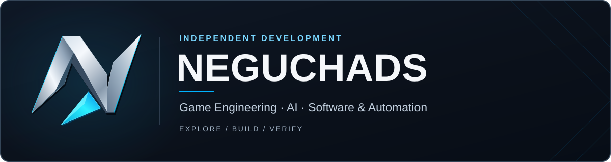

NAVI / Engineering Universe
Inteligência de engenharia interconectada
Explore projetos, tecnologias, relações e métricas públicas em um único universo.
Profile & Overview
Knowledge universe
Arraste para rotacionar. Selecione um nó no grafo ou na lista. Linhas sólidas: catálogo editorial; tracejadas: integrações declaradas; pontilhadas: linguagem principal informada pelo GitHub. Não representam dependências AST.
Featured projects
GitHub Analytics
Totais de projetos públicos originais ativos, exceto o perfil; repositórios públicos incluem forks. Itens abertos incluem PRs. Linguagens representam a linguagem principal de cada projeto.
Tecnologias
Histórico de 90 dias
| Data UTC | Originais | Stars | Forks | Itens abertos |
|---|